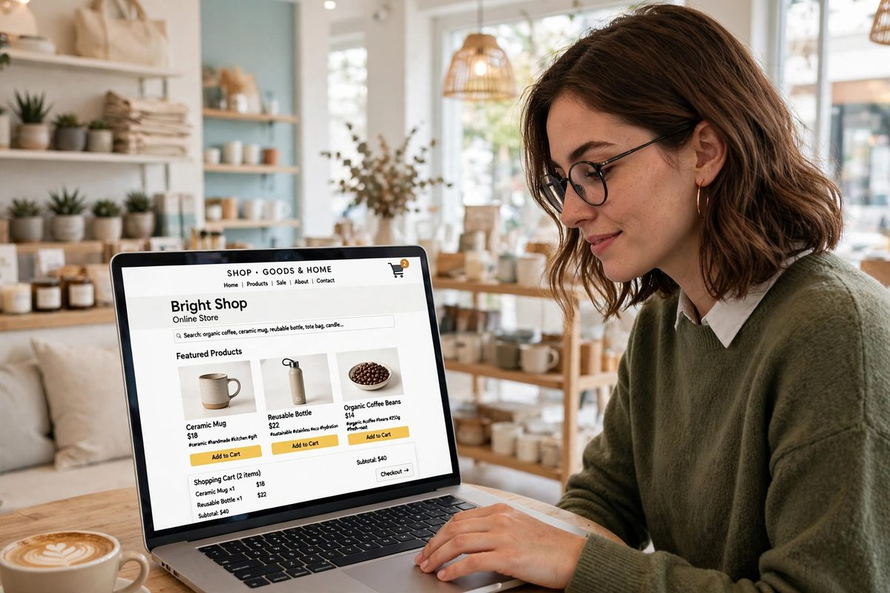

Home > Guides > Ecommerce Keywords: Find Phrases That Lead to Sales
Ecommerce Keywords: Find Phrases That Lead to Sales
A practical guide from Keyword Finder.

Ecommerce keyword research is different from blog keyword research. A blog wants readers; a store wants buyers. The keywords that bring buyers are often specific: a product name, a brand, a size, a colour, a price, or a phrase such as buy, best, cheap or near me. This guide explains how ecommerce search works, which keyword types matter for a store, and how to use them on product pages, category pages and guides without repeating the same phrase everywhere. It is written for small store owners and for anyone who writes about products.
How shoppers search
Shoppers search in stages. Early on, they search for ideas and comparisons: best running shoes for beginners. Later, they search for a specific product: a brand and model name. Finally, they search to buy: the product name plus buy, price or discount. Each stage needs a different kind of page. A guide fits the early stage, a comparison fits the middle, and a product page fits the final stage. A store that only has product pages will miss the early-stage searches, and a store that only has guides will miss the buyers. Cover the stages that matter to your products.
Product and category keywords
Every product needs a keyword: usually the product name plus a key detail, such as the size, colour or main feature. Every category needs a keyword too: the type of product plus a detail, such as men's waterproof jackets. Use the product keyword in the product title and description, and the category keyword on the category page. Do not use the same keyword on many product pages, because they will compete. If two products are very similar, give each one a distinct detail in its keyword, such as the colour or the size, so each page has its own phrase.
Commercial keywords that show buying intent
Phrases with best, top, review, vs, buy, price, cheap, discount and deal often show that the searcher is close to buying. These are valuable, but they are also competitive, because every store wants them. Target them with honest comparison and review pages, not with thin pages that repeat the phrase. A comparison page should compare real products, with real prices and real differences, and should help the reader decide. A review page should be based on real use or careful research, not on copied descriptions. Honest commercial pages build trust and bring buyers who are ready to act.
Use keywords without harming the store
Do not stuff product keywords into every sentence, and do not create a page for every tiny variation of a phrase. A product page should read naturally, describe the product clearly, and answer the questions a buyer would ask: size, material, care, delivery and returns. Use the keyword in the title and once in the description, then write for the buyer. Link related products and guides to each other, so a reader who lands on a guide can find the product easily. Good ecommerce keywords help buyers find the right product, not just help the store rank.
Quick tips
- Cover all three shopping stages
- Give each product its own distinct keyword
- Write honest comparisons, not thin pages
- Answer buyer questions: size, delivery, returns
Frequently asked questions
What is an ecommerce keyword?
A search phrase used by someone looking to buy a product, such as a product name, a category, or a phrase with buy, best, price or review.
Should every product page target a keyword?
Yes, usually the product name plus a key detail. Give similar products distinct keywords so they do not compete with each other.
Are best keywords worth targeting for a store?
Yes, if you write an honest comparison. Best keywords show the searcher is comparing options and may buy soon, but they are competitive.